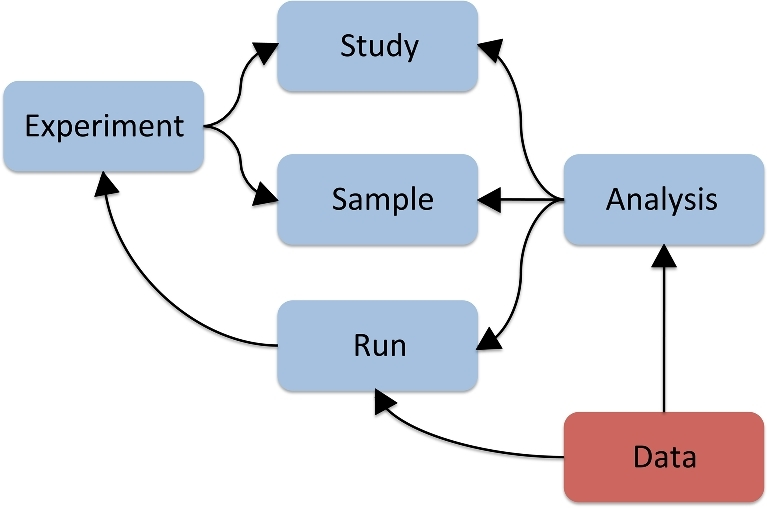
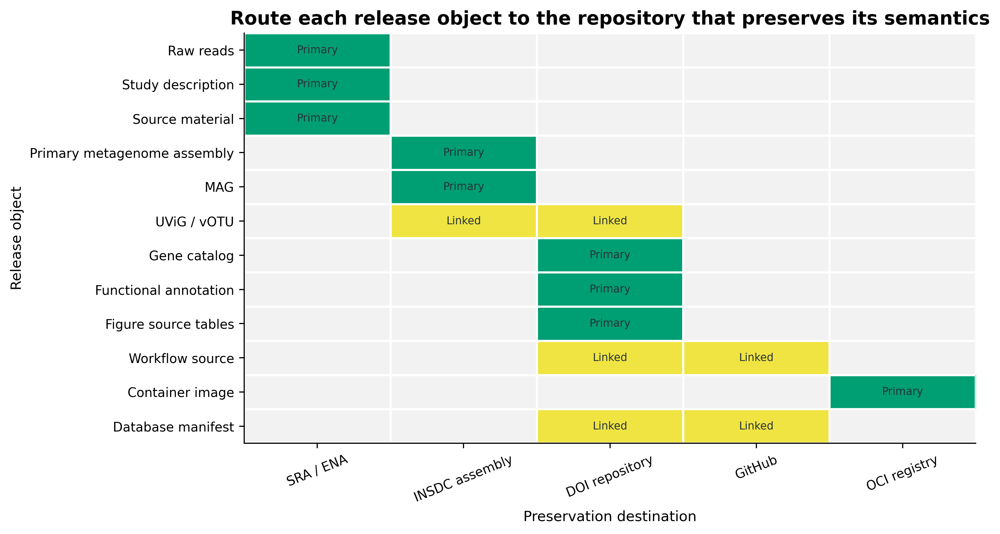
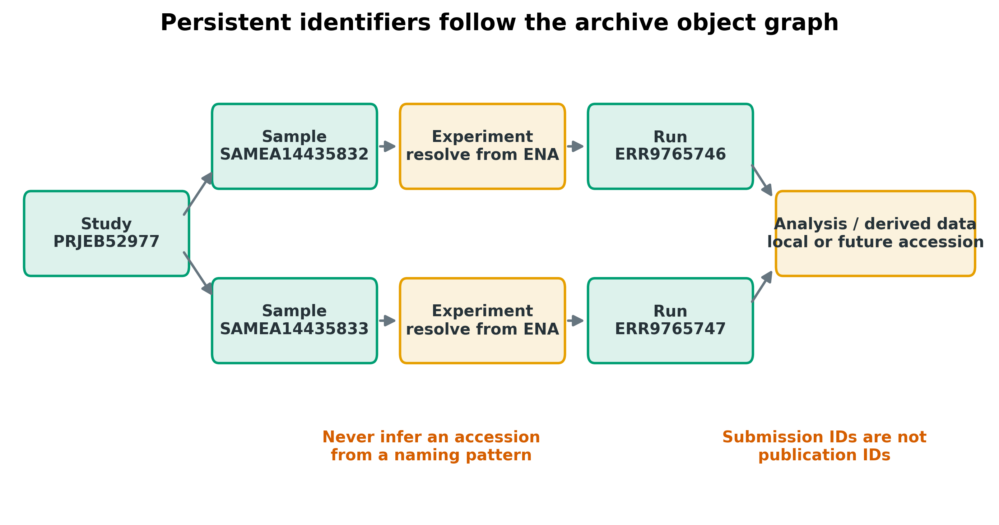
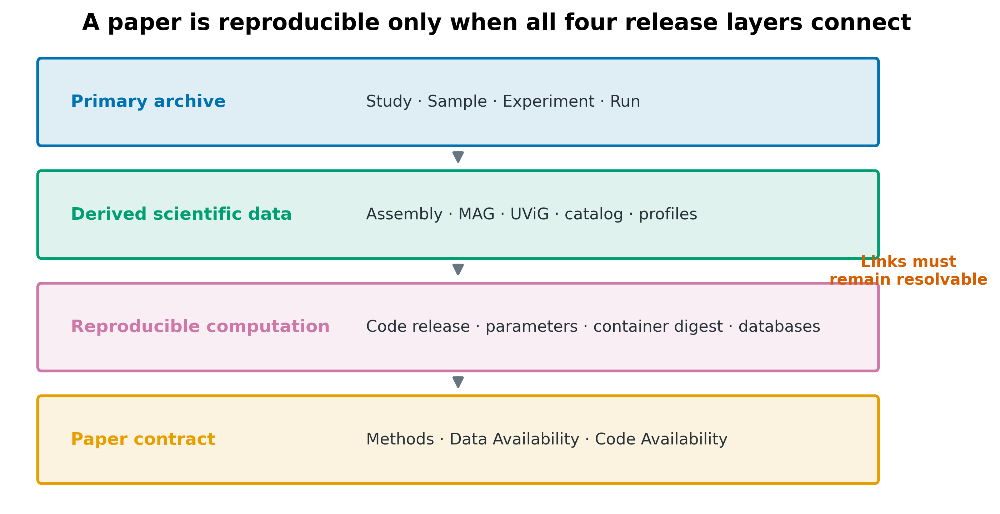
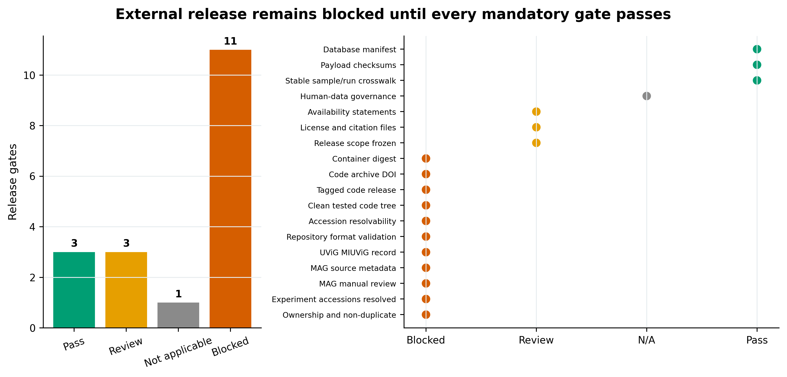
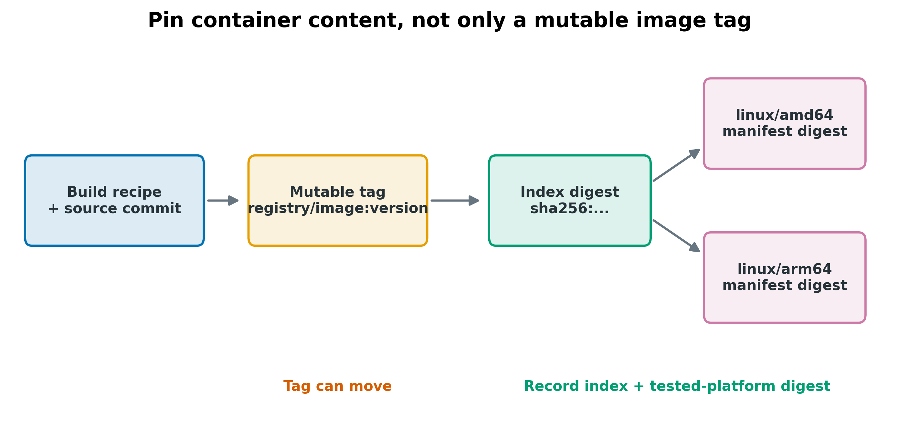
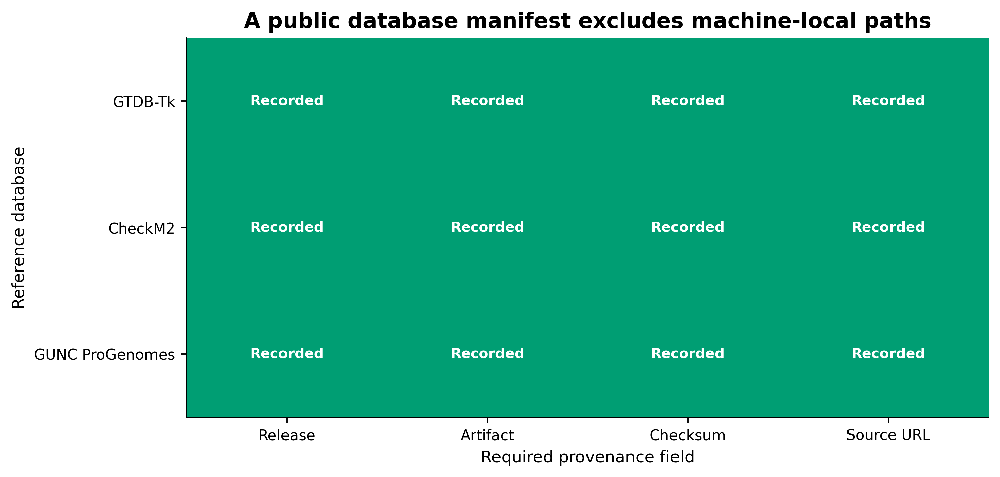
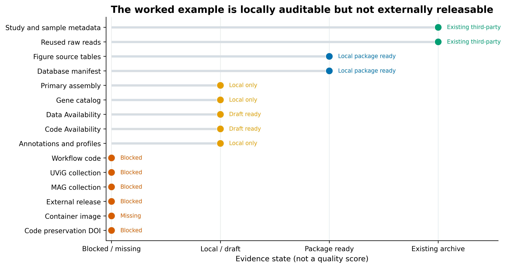
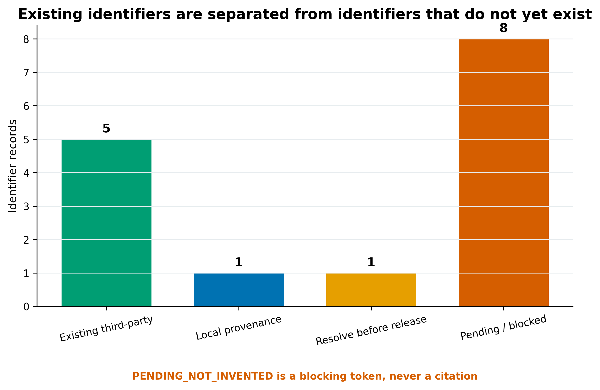
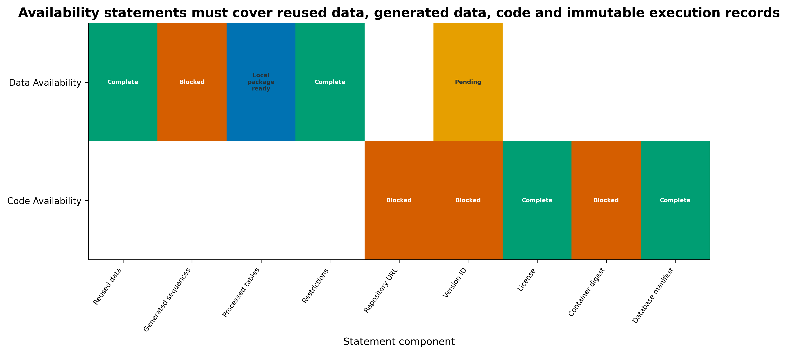

| ObjectType | Identifier | Parent | IdentifierState |
|---|---|---|---|
| Study | PRJEB52977 | None | EXISTING_THIRD_PARTY |
| Sample | SAMEA14435832 | PRJEB52977 | EXISTING_THIRD_PARTY |
| Sample | SAMEA14435833 | PRJEB52977 | EXISTING_THIRD_PARTY |
| Experiment | EXISTING_NOT_CAPTURED | SAMEA14435832 | RESOLVE_BEFORE_RELEASE |
| Experiment | EXISTING_NOT_CAPTURED | SAMEA14435833 | RESOLVE_BEFORE_RELEASE |
| Run | ERR9765746 | SAMEA14435832 | EXISTING_THIRD_PARTY |
| Run | ERR9765747 | SAMEA14435833 | EXISTING_THIRD_PARTY |
| Primary assembly | LOCAL_ARTICLE30_ASSEMBLY | ERR9765746;ERR9765747 | LOCAL_ONLY |
数据、代码与基因组提交
先给结论：原始 reads、组装、MAG/UViG、gene catalog、分析表、代码和容器应按对象语义分别归档，再用稳定标识符把它们串起来。SRA/ENA 的 Run accession 不能代替 processed table 的 DOI；GitHub tag 不能代替版本化代码 DOI；Docker tag 不能代替 OCI digest；本地 SHA-256 包也不是一次公开发布。只有 accession/DOI/digest 已真实产生并可解析时，才能写进定稿。
提示文件能下载之后，还要怎样保证结果可追溯
先把研究、样本、运行与派生对象连起来；只有真正取得的 accession 和 DOI 才能写进可用性声明。
原始数据、派生结果和代码，分别应该存在哪里？
ten Hoopen 等人的 Figure 2 把宏基因组归档拆成五种相连对象：Study、Sample、Experiment、Run、Analysis (Hoopen 等 2017年)。Study 描述研究范围，Sample 描述生物材料，Experiment 描述建库和测序设计，Run 指向原始 reads 文件，Analysis 承接 assembly、分类/功能注释等派生结果。图中的箭头比“把所有文件扔进一个网盘”重要得多：归档的核心是可追溯关系，不只是文件存在。

10.1093/gigascience/gix047
今天的仓库界面和字段模板已经更新，但对象关系仍然成立。NCBI 当前文档明确区分 BioProject/Study、BioSample/Sample、Experiment 与 Run (National Center for Biotechnology Information 2026年f)；ENA 的 reads、primary metagenome assembly 和 MAG 提交流程也都要求先有 Study/Sample，并保留与下层 reads 的链接 (European Nucleotide Archive 2026年c, 2026年b, 2026年a)。
重要先画对象图，再打开提交门户
投稿前先做一张 internal_sample_id → BioSample → Experiment → Run → Assembly → MAG/UViG/catalog crosswalk。若某个箭头没有真实标识符或来源证据，就把它列为阻断门；不要根据 accession 的外观猜一个编号。
文件能下载之后，还要怎样保证结果可追溯？
可下载只是访问条件。读者还需要知道某张分析表来自哪些原始样本、使用哪次代码发布和哪份参考数据库，以及过滤前后对象怎样对应。accession、DOI 与 digest 分别解决对象身份、版本引用和具体内容标识等问题，不能互相替代；校验值也不能证明数据获得了合法公开授权。
人源宏基因组还可能包含宿主信息，清除标识符或过滤宿主 reads 不等于自动满足同意、伦理和数据库要求。受限材料应使用相应访问机制，并明确公开与受限部分的连接方式。更正发布时保留旧版本与变更说明，避免以同一链接静默替换内容，使已发表结果失去可追溯性。
从 accession crosswalk 开始
仓库按对象语义分工，不按“哪个能上传”分工
SRA/ENA 的核心职责是保存 primary sequence data 及其标准元数据。NCBI SRA 接收 raw 或 minimally processed reads，不接收 assembly/consensus/contigs；read archive 还需要逐碱基质量信息，单独 FASTA 不够 (National Center for Biotechnology Information 2026年g, 2026年h, 2026年e)。assembly、MAG 和 UViG 是派生序列对象，要走对应的 genome/analysis 路径；gene catalog、annotation、abundance matrix 与 figure-source table 通常更适合带 DOI 的通用数据仓库。

可把归档关系写成：
\[ R = (O, I, E, V), \]
其中 \(O\) 是对象类型，\(I\) 是持久标识符，\(E\) 是对象之间的有向边，\(V\) 是版本与校验和。缺少任一项都可能造成“文件找得到，但无法证明它属于哪个样本、哪个分析版本或哪张图”。
accession 是对象身份，不是上传回执
同一研究里常见多层 ID：BioProject/Study、BioSample/Sample、Experiment、Run、Assembly、Genome。NCBI 的 SUB# 和 ENA 的 ERZ... 属于提交跟踪或内部处理标识，不是论文最终引用的公共 accession (National Center for Biotechnology Information 2026年h; European Nucleotide Archive 2026年a)。同理，Webin-CLI 的 -validate 只验证本地包，-submit 才触发外部提交；验证成功也不等于 accession 已发布。

本章公共输入来自 PRJEB52977：
| Object | Existing identifier | Relationship |
|---|---|---|
| Study | PRJEB52977 |
public third-party project |
| Sample 1 | SAMEA14435832 |
source of ERR9765746 |
| Sample 2 | SAMEA14435833 |
source of ERR9765747 |
| Run 1 | ERR9765746 |
paired FASTQ |
| Run 2 | ERR9765747 |
paired FASTQ |
这些 accession 只能用于引用原研究并复用数据，不能重新提交、不能改称本项目新产生的数据。所有尚未真实获得的 accession/DOI/digest 统一写作 PENDING_NOT_INVENTED；它是阻断标记，不是占位 accession。
先展示对象表，而不是先写上传命令：
生产项目至少准备以下列：
internal_subject_id
internal_sample_id
bioproject_or_study_accession
biosample_or_sample_accession
experiment_accession
run_accession
assembly_accession
derived_biosample_accession
mag_or_uvig_accession
catalog_release_doiinternal_* 可以在研究开始时生成；archive accession 必须由仓库真实返回。缺失时保留空值和阻断状态，不要用 PRJNA000000、SAMN00000000 或“看起来合理”的 ERX 编号填表。
注意坑 2：把上传回执写成 accession
SUB#、ERZ...、validation directory 和 portal submission name 都不是最终论文标识符。定稿前逐个点击/查询正式 accession，确认公开状态和父子关系。
注意坑 3：从 Run 名称猜 Experiment accession
archive 对象有固定关系，但编号模式不是 API。应从 ENA/NCBI record 解析真实 Experiment；查不到就保持 unresolved。
给 raw reads 做可验证 manifest
公共示例有 2 个 Run、4 个 paired FASTQ，合计约 8.40 GB；每个文件保留 ENA 报告的 MD5、bytes 与下载 URL。
| Artifact | PersistentIdentifier | ChecksumType | Checksum | Bytes | State |
|---|---|---|---|---|---|
| ERR9765746-R1 | ERR9765746 | MD5 | ed0e6e0ee846542531c742a45181cd6f | 1740647656 | EXISTING_THIRD_PARTY |
| ERR9765746-R2 | ERR9765746 | MD5 | 5b60ac93cb69dff77ae38cfa501afd06 | 2104551765 | EXISTING_THIRD_PARTY |
| ERR9765747-R1 | ERR9765747 | MD5 | c0e6bb8f83a818f3feef7334cbf50b28 | 2141177143 | EXISTING_THIRD_PARTY |
| ERR9765747-R2 | ERR9765747 | MD5 | fac9f4841f519c72b31149b492479def | 2417824585 | EXISTING_THIRD_PARTY |
下载后同时验证 archive checksum 与本地 SHA-256：
md5sum ERR9765746_1.fastq.gz ERR9765746_2.fastq.gz
sha256sum ERR9765746_1.fastq.gz ERR9765746_2.fastq.gz \
> ERR9765746.sha256
sha256sum --check ERR9765746.sha256BioProject 与 BioSample 是 SRA 提交前置对象：BioProject 描述研究目标，BioSample 描述被测生物材料 (National Center for Biotechnology Information 2026年d)。paired mates 属于同一个 Run；不同样本或不同实验不能为了少填表而塞进同一个 Run (National Center for Biotechnology Information 2026年f)。
警告人体宏基因组先做数据治理
人体宏基因组可能夹带宿主 reads。公开上传前要核对 consent、伦理审批、去宿主流程和 archive 的访问政策；需要受控访问时，应公开可发现的元数据与申请路径，而不是公开受限 reads。
从“有链接”升级为“每个对象都能解析”
过去常在补充材料里放一个 SRA project 和一个 GitHub 主分支。今天应逐层审计：
- Study/Sample/Experiment/Run 是否真实存在且互相链接；
- assembly、MAG/UViG 是否回指 source reads 与 sample；
- processed data 是否有固定版本、数据字典、校验和与 DOI；
- code DOI 是否对应 manuscript release，而不是最新 main；
- container 是否有 index 与实测平台 digest；
- database manifest 是否能重新下载并核验；
- Data/Code Availability 中每个标识符是否已解析。
注意坑 1：把 SRA project 当成所有数据的下载地址
SRA/ENA Run 解决 raw reads；gene catalog、annotation、abundance matrix 与 figure source data 仍要单独归档。Data Availability 要逐类说明，不能只写一个 BioProject。
把 validate 与 submit 分成两次审批
ENA Webin-CLI 的 reads manifest 应引用已经注册的 Study/Sample，并写全 library/platform 文件关系 (European Nucleotide Archive 2026年c)：
# 只验证，不产生外部提交
java -jar webin-cli.jar \
-context reads \
-manifest manifests/reads-manifest.txt \
-inputDir payload/raw \
-outputDir validation/reads \
-validate
# 仅在 ownership、consent、metadata、checksum 与 release date 审批后执行
java -jar webin-cli.jar \
-context reads \
-manifest manifests/reads-manifest.txt \
-inputDir payload/raw \
-outputDir submission/reads \
-submit同样，primary metagenome assembly 用 genome context、assembly manifest 与 FASTA，并强链接原始 Run (European Nucleotide Archive 2026年b)：
java -jar webin-cli.jar \
-context genome \
-manifest manifests/primary-assembly-manifest.txt \
-inputDir payload/assembly \
-outputDir validation/primary-assembly \
-validatemanifest 字段以提交当天官方模板为准。不要把 -validate 输出、SUB# 或 ERZ... 写成论文 accession；等 archive 完成处理后，核对最终 Study/Sample/Run/Assembly accession 能从公开页面解析并互相链接。
MAG：质量通过仍不等于拥有提交资格
MAG 提交不仅看 completeness/contamination。NCBI/ENA 还需要来源关系、derived sample metadata、规范 organism name 和适用的 MIMAG package (National Center for Biotechnology Information 2026年a, 2026年b; European Nucleotide Archive 2026年a)。本地 MAG 审核包的 12 个技术候选仍有 5 个阻断门：
| Gate | Status | EvidenceOrNextAction | Owner | |
|---|---|---|---|---|
| 2 | Ownership and non-duplicate | Blocked | Tutorial source data and mock MAGs are third-party public examples | Principal investigator |
| 6 | MAG manual review | Blocked | Article 49 investigator sign-off remains pending | Genome analyst |
| 7 | MAG source metadata | Blocked | BioProject, per-MAG BioSamples and mandatory package fields are absent | Genome analyst |
| 10 | Repository format validation | Blocked | No Webin-CLI or NCBI submission validation report exists | Data steward |
| 11 | Accession resolvability | Blocked | No new sequence accession or derived-data DOI exists | Data steward |
关键边界是 ownership：这些 MAG 来自公共教程 mock 数据，不是一个新的 submitter-owned genome study，因此不能重新提交。在自己的项目中，每个准备公开的 MAG 还要确认：
- 非冗余代表选择已冻结，避免同一物种同一 biome 重复提交；
- MIMAG/CheckM2/GUNC、rRNA/tRNA、contig/coverage 异常和人工复核有逐 MAG 记录；
- source reads、primary assembly、原始 BioSample 与 derived MAG BioSample 能回链；
- organism name 与 NCBI/ENA taxonomy 协调完成，不把 GTDB lineage 直接当作 NCBI 批准名；
- 先运行
-validate，人工审阅 manifest 和 FASTA，再审批-submit。
注意坑 4：技术质量通过就提交公共 MAG
MIMAG/CheckM2/GUNC 通过不代表拥有数据、没有重复 submission、taxonomy 名称已协调、source metadata 完整或人工审核完成。ownership 是独立硬门。
UViG/vOTU：序列、聚类和 MIUViG 要一起交代
数据发布、代码发布和执行环境是三条不同的版本链
数据 DOI 锁定某版 scientific payload；代码 release 锁定程序与工作流；OCI digest 锁定容器内容。三者共同指向同一篇稿件，但不能互相代替。

Zenodo record 同时包含 metadata、files 和 DOI；已发布记录的 DOI 与文件不可直接覆盖，更新应创建新版本 (Zenodo 2026年a, 2026年b)。GitHub 的 CITATION.cff 能提供首选引用信息，但长期保存仍需发布 release 并归档到 Zenodo；每版 release 应有对应版本 DOI (GitHub 2026年a, 2026年c)。
UViG release 至少包含：序列 FASTA、vOTU membership、来源 Run/assembly、识别软件、预测 genome type/structure、detection type、CheckV quality 与 contig 数。NCBI 当前提供 MIUVIG BioSample package 6.0 (National Center for Biotechnology Information 2026年c)。本地病毒 fixture 的 assembly software 与 predicted genome type 缺失，并且不是本项目拥有的研究数据，因此保持 blocked。
不能把以下概念混为一谈：
- vOTU 是相似性聚类单元；
- UViG 是待报告的病毒基因组实体；
complete软件预测不是 finished genome；- vOTU representative 不自动获得 sequence accession；
- 第三方 regression fixture 不自动获得重新提交权。
gene catalog、annotation 和 figure source data 用版本化数据包
gene catalog 不只交一个 representatives.faa。最低可复用单元包括：
representatives.fna
representatives.faa
membership.tsv
gene-annotation.tsv
sample-by-gene-abundance.tsv
catalog-build-parameters.json
database-manifest.tsv
README.md
data-dictionary.tsv
SHA256SUMS本例 megahit-mix-primary 有 93,782 个代表基因；FNA 逻辑 SHA-256 为 86b1d6b5dd5bc812b0a6b6d1612f6d0aba8ef8fbff6425ebc627c6d539f3a6f0，FAA 为 005a26d60eaa357ff328b97071b49fe1d580f4e8e488bca1ba49f22dfd01ac17。但文件未进入 staging，哈希记录不能代替 payload。
find release-v1 -type f ! -name SHA256SUMS -print0 \
| sort -z \
| xargs -0 sha256sum > release-v1/SHA256SUMS
cd release-v1
sha256sum --check SHA256SUMSZenodo 发布后 DOI 与文件不可直接替换；更新数据时创建新 version，保留版本间链接 (Zenodo 2026年a, 2026年b)。论文应引用实际用于分析的版本 DOI，而不是只引用 concept DOI 或项目首页。
代码：clean commit → signed tag → GitHub release → version DOI
git status --short
python3 -m pytest
quarto render
git tag -s v1.0.0 -m "Manuscript analysis release v1.0.0"
git push origin v1.0.0
gh release create v1.0.0 \
--verify-tag \
--title "Manuscript analysis v1.0.0" \
--notes-file CHANGELOG.md仓库还应包含 LICENSE、CITATION.cff、环境锁、参数、测试和最小运行说明。若 GitHub 与 Zenodo 已连接，公开 GitHub release 后由 Zenodo 归档，并把返回的 version DOI 写入 CITATION.cff 与 Code Availability (GitHub 2026年a, 2026年c)。不可变 release 可进一步锁住 tag 与 assets，但仍需保存 DOI 和 checksum 证据 (GitHub 2026年b)。
18 道发布门必须逐项过

最容易被忽视的门不是 checksum，而是：
- ownership/non-duplicate：公共教程数据不能改头换面再提交；
- human-data governance：知情同意与宿主序列治理必须先于开放；
- repository validation：验证报告与最终 accession 都要留档；
- clean tested release：脏工作树的 commit 不能代表论文版本；
- identifier resolvability：
PENDING_NOT_INVENTED必须在定稿前被真实 ID 替换或把对应声明删除； - database/container identity：不能只报工具名、数据库名或 tag。
注意坑 5：把 GitHub main、release tag 和 DOI 当成一回事
main 会移动；tag 可能被重指；GitHub release 是发布事件；Zenodo version DOI 是保存记录。Methods 与 Code Availability 要给 exact tag、commit 和 version DOI。
注意坑 8：在 Data Availability 里承诺尚不存在的 DOI
未发布时使用内部阻断标记；final proof 前必须替换为可解析 DOI/accession。若某资产最终不发布，应重写声明和研究限制，不能保留虚构标识符。
容器：同时记 index digest 与实测平台 digest
tag 可变，digest 才描述容器内容
registry/image:1.0 是人类可读标签，可以被重新指向；sha256:... digest 按内容寻址。多架构镜像还至少有两层：multi-platform index digest 指向平台集合，platform manifest digest 指向如 linux/amd64 的具体镜像 (Docker 2026年)。Methods 只写 image tag，无法保证审稿人拉到同一内容。

docker buildx build \
--platform linux/amd64,linux/arm64 \
--tag REGISTRY/PROJECT/analysis:v1.0.0 \
--push .
# 记录 multi-platform index digest 与平台列表
docker buildx imagetools inspect \
REGISTRY/PROJECT/analysis:v1.0.0
# 保存原始 OCI index，再提取各 platform manifest digest
docker buildx imagetools inspect --raw \
REGISTRY/PROJECT/analysis:v1.0.0 \
> container-index.json
jq -r '.manifests[] | [.platform.os, .platform.architecture, .digest] | @tsv' \
container-index.json > container-platform-digests.tsv最后从 digest 启动 smoke test，而不是从 tag 启动：
docker pull REGISTRY/PROJECT/analysis@sha256:INDEX_DIGEST
docker run --rm \
REGISTRY/PROJECT/analysis@sha256:PLATFORM_MANIFEST_DIGEST \
workflow --version
注意坑 6：容器只写
image:latest
tag 不锁内容；多架构镜像还要区分 index digest 与 platform manifest digest。写清实际测试平台，并从 digest 重跑 smoke test。
公共数据库清单删除本机路径
数据库也是输入数据，必须进入版本清单
“使用 GTDB、CheckM2 和 GUNC 数据库”不够。至少记录：release、实际 artifact、checksum、source URL 与下载日期。服务器路径只对一台机器有意义，不应出现在公开清单；公开清单保留能让别人重新定位和核验的字段。
| Database | Release | Artifact | ChecksumType | Checksum |
|---|---|---|---|---|
| GTDB-Tk reference package | R11-RS232 | gtdbtk_r232_data.tar.gz | MD5 | 25a59e0352b1fd150c589f56559767d4 |
| CheckM2 reference database | Zenodo 14897628; dataset version 3 | checkm2_database.tar.gz | MD5 | 07c10655620843b517d0df0c160d911f |
| GUNC ProGenomes | ProGenomes 2.1; GUNC 1.1.0 download endpoint | gunc_db_progenomes2.1.dmnd.gz | MD5 | bc93a855e0760aad5c4e5f2d0e26da46 |

可用下面的 Python 代码从内部 ledger 生成公开版：
import pandas as pd
db = pd.read_csv("internal/database-lock.tsv", sep="\t")
required = ["Database", "Release", "Artifact", "ChecksumType", "Checksum", "SourceURL"]
assert db[required].notna().all().all()
public = db[required].copy() # explicitly excludes LocalPath
assert "LocalPath" not in public.columns
public.to_csv("release-v1/database-manifest.tsv", sep="\t", index=False)当前文档不是永久政策
NCBI/ENA package version、必填字段、受理范围、Zenodo 限额、GitHub release policy 和期刊要求都可能变化。本地快照能复现本次判断，却不能替代提交当天的官方文档。每个 mutable source 都带 RecheckAtSubmission=Yes，变更后要更新 policy assertion、Methods 与 validation evidence。
注意坑 7：数据库清单泄露本机路径，却没有 checksum
服务器内部绝对路径对读者无用，也可能暴露内部结构。公开版只保留 release、artifact、checksum、source URL 与 retrieval date。
Data Availability 与 Code Availability 分开写
期刊的 Data Availability 要覆盖新产生和复用的数据，给出 persistent identifier；有限制时写明原因与访问程序 (Springer Nature Support 2026年)。Code Availability 单独列 repository、release tag、commit、version DOI、license、container digest 和 database manifest。
| Statement | Component | Status |
|---|---|---|
| Data Availability | Reused study | Complete |
| Data Availability | Reused samples | Complete |
| Data Availability | Reused runs | Complete |
| Data Availability | Primary assembly | Pending |
| Data Availability | MAGs | Blocked |
| Data Availability | UViGs | Blocked |
| Data Availability | Gene catalog | Pending |
| Data Availability | Figure source data | Local package ready |
| Data Availability | Restrictions | Complete |
| Code Availability | Repository URL | Blocked |
| Code Availability | Release tag | Blocked |
| Code Availability | Commit | Local only |
| Code Availability | Version DOI | Blocked |
| Code Availability | License | Complete |
| Code Availability | CITATION.cff | Missing |
| Code Availability | Container digest | Blocked |
| Code Availability | Database manifest | Complete |
当前示例为什么不能对外提交

| ReleaseObject | Status | EvidenceOrNextAction |
|---|---|---|
| Reused raw reads | Existing third-party | Cite PRJEB52977, ERR9765746 and ERR9765747; no new submission |
| Study and sample metadata | Existing third-party | Cite PRJEB52977 and two SAMEA accessions; resolve experiment accessions |
| Primary assembly | Local only | Package manifest and FASTA only after ownership and release scope are approved |
| MAG collection | Blocked | Manual sign-off, ownership, taxonomy names, BioSamples and source metadata are unresolved |
| UViG collection | Blocked | Independent fixture is not a study deposit and MIUViG has two missing fields |
| Gene catalog | Local only | Summary records 93,782 genes, but representative files are not staged here |
| Annotations and profiles | Local only | Deposit long tables, dictionaries and database links as a versioned dataset |
| Figure source tables | Local package ready | Checksum-covered tables can be bundled after manuscript scope freezes |
| Workflow code | Blocked | Working tree is not a clean public release and no tag is recorded |
| Code preservation DOI | Blocked | No GitHub release has been archived by Zenodo |
| Container image | Missing | No registry, index digest or tested platform digest is recorded |
| Database manifest | Local package ready | GTDB R232, CheckM2 v3 and GUNC ProGenomes 2.1 have checksums |
| Data Availability | Draft ready | Current statement names reused data and honestly marks generated deposits pending |
| Code Availability | Draft ready | Current statement separates local commit evidence from a future public DOI |
| External release | Blocked | No external-ready claim is made by this tutorial packet |
这里的判断不是“完成率评分”，而是 gate-based decision。Existing third-party 表示可引用既有 archive record；Local package ready 表示本地证据齐全但尚未获得 DOI；Blocked/Missing 表示不能进入外部发布。

写清数据与代码的真实获取方式
Methods 模板
Raw shotgun metagenomic reads were archived under BioProject/Study [PROJECT_ACCESSION], BioSamples [BIOSAMPLE_ACCESSIONS], and Runs [RUN_ACCESSIONS]. Primary metagenome assemblies and eligible MAG/UViG records were deposited under [ASSEMBLY_AND_GENOME_ACCESSIONS], with explicit links to source samples and runs. Processed profiles, the nonredundant gene catalog, annotations, data dictionaries, and figure-source tables were released as dataset version [DATA_RELEASE] at [DATA_VERSION_DOI]. Analysis code was frozen at release [CODE_TAG], commit [COMMIT_SHA], and version DOI [CODE_VERSION_DOI]. The tested container [REGISTRY/IMAGE] was pinned by OCI index digest [INDEX_DIGEST] and [PLATFORM] manifest digest [PLATFORM_DIGEST]. Reference resources were locked to GTDB-Tk R11-RS232, CheckM2 database version 3 (Zenodo record 14897628), and GUNC 1.1.0 / ProGenomes 2.1, with artifact checksums and source URLs reported in the database manifest. Release manifests and figures were generated with Python 3.13.2, pandas 3.0.3, and fixed seed 20260777.
只有真实使用这些版本时才保留版本号；换了数据库或平台，就同步更新 manifest、Methods、结果和图。
Data Availability 模板
Raw sequence reads are available from [SRA_OR_ENA] under BioProject/Study [PROJECT_ACCESSION], BioSamples [BIOSAMPLE_ACCESSIONS], and Runs [RUN_ACCESSIONS]. The primary metagenome assemblies and MAG/UViG records are available under [ASSEMBLY_AND_GENOME_ACCESSIONS]. Version [DATA_RELEASE] of the gene catalog, annotations, abundance tables, and figure-source data is archived at [DATA_DOI]. Controlled files, if any, are available through [CONTROLLED_REPOSITORY] under [ACCESS_PROCEDURE]; public metadata remain available at [METADATA_ACCESSION].
Code Availability 模板
Analysis code is available at [PUBLIC_REPOSITORY_URL], release [RELEASE_TAG], commit [COMMIT_SHA], and archived as version DOI [CODE_VERSION_DOI]. The tested container is [REGISTRY/IMAGE], pinned by multi-platform index digest [OCI_INDEX_DIGEST] and tested-platform manifest digest [OCI_PLATFORM_DIGEST] for [PLATFORM]. Workflow parameters, software locks, tests, and database manifests are included in the archived release.
当前公共示例只能诚实写成：复用的 reads 位于 PRJEB52977、SAMEA14435832/3、ERR9765746/7；本地 assembly、MAG、UViG、gene catalog、figure source 与代码尚未作为新研究产物发布，没有新的 accession/DOI/digest，不能称为 publicly released dataset。
换到自己的研究中，先检查哪些条件？
在采样前建立对象和责任人
先定 BioProject/Study 范围、BioSample package、内部 sample ID、consent/伦理范围、release date 和 data steward。人体项目同时确定 host-read screening 与 controlled-access 策略；环境项目先锁 MIxS/环境 package 字段，避免样本采完才发现经纬度、日期或环境材料缺失。
按发布包目录收集，而不是投稿前四处找文件
| Order | PackageObject | SuggestedPath | Purpose |
|---|---|---|---|
| 1 | README | README.md | Explain scope, versions, licenses and reuse |
| 2 | Data dictionary | metadata/data-dictionary.tsv | Define every field, unit and missing-value code |
| 3 | Sample crosswalk | metadata/sample-run-crosswalk.tsv | Link internal IDs to BioSample and Run |
| 4 | Raw-read manifest | manifests/raw-reads.tsv | URL, bytes and archive checksum per mate |
| 5 | Assembly manifest | manifests/assemblies.tsv | Source runs, assembler, parameters and checksum |
| 6 | MAG manifest | manifests/mags.tsv | MIMAG, taxonomy, source assembly and accession |
| 7 | UViG manifest | manifests/uvigs.tsv | MIUViG, vOTU membership and accession |
| 8 | Gene catalog manifest | manifests/gene-catalog.tsv | FNA/FAA/membership/annotation hashes |
| 9 | Database manifest | manifests/databases.tsv | Release, artifact, checksum and source |
| 10 | Workflow parameters | workflow/params.json | Non-default parameters and seed |
| 11 | Software lock | workflow/software-versions.tsv | Workflow, tool and plugin identities |
| 12 | Container ledger | workflow/container-ledger.tsv | Registry and immutable digests |
| 13 | Figure sources | results/figure-source/ | One tidy table per final figure/panel |
| 14 | Analysis outputs | results/tables/ | Machine-readable derived tables |
| 15 | Checksums | SHA256SUMS | Cover every released payload file |
| 16 | CITATION | CITATION.cff | Preferred citation and version |
| 17 | License | LICENSES/ | Content, code and third-party boundaries |
| 18 | Availability statements | manuscript/availability-statements.md | Exact identifiers and access conditions |
每次 figure freeze 后更新 source table 和 checksum；每次 workflow/database/container 变化后更新 version ledger。不要保存所有巨大临时文件，但 raw reads、关键 assembly、最终 MAG/UViG、gene catalog、processed tables、参数与 provenance 必须有明确去向。
用硬门做最终放行
提交前要求以下项目全部有负责人签字：
- ownership、non-duplicate 与人类数据治理；
- Study/Sample/Experiment/Run crosswalk；
- MAG MIMAG/GUNC/人工审核与 UViG MIUViG；
- repository format validation 与最终 accession；
- processed data DOI、数据字典和 SHA256SUMS；
- clean tested code、signed tag、GitHub release 与 version DOI；
- OCI index/platform digest 与 digest-pinned smoke test；
- public database manifest、license、CITATION.cff；
- Data Availability 与 Code Availability 中所有 ID 可解析；
- manuscript、supplement、repository landing page 的版本一致。
任何 mandatory gate 未通过，状态都保持 blocked。延迟提交比发布错误 accession、重复 MAG、敏感 reads 或无法重现的容器更容易修复。
图中应该保留哪些信息？
发布图不是装饰，而是让读者检查“数据在哪里、标识符属于谁、哪些仍未发布”。建议正文保留三类图：
- object graph：只画实际存在的 accession，未知节点明确显示 unresolved；
- routing matrix：一眼区分 archive、DOI repository、code host 和 OCI registry；
- release gate plot：红色只表示阻断，不把 local-ready 染成“已发布”的绿色。

图内文字统一英文，颜色同时配合位置与文字标签，避免只靠红绿判断。PNG 用 350 dpi 供公众号，SVG/PDF 用于网页和投稿；每张图的 source table、脚本、版本与 SHA-256 同时进入 release packet。
回到最初的问题
raw reads、MAG、UViG、gene catalog、代码和容器不是同一种归档对象；先建立 Study→Sample→Experiment→Run→Analysis 链，再给每一层配置正确仓库、不可变标识符与可用性声明。
参考文献
- 宏基因组归档对象模型与分析结果保存：Hoopen 等 (2017年)。
- NCBI SRA 范围、对象、格式与 BioProject/BioSample：National Center for Biotechnology Information (2026年g); National Center for Biotechnology Information (2026年h); National Center for Biotechnology Information (2026年f); National Center for Biotechnology Information (2026年e); National Center for Biotechnology Information (2026年d)。
- NCBI MAG/MIUVIG submission packages：National Center for Biotechnology Information (2026年a); National Center for Biotechnology Information (2026年b); National Center for Biotechnology Information (2026年c)。
- ENA raw reads、primary metagenome assembly 与 MAG：European Nucleotide Archive (2026年c); European Nucleotide Archive (2026年b); European Nucleotide Archive (2026年a)。
- Zenodo records/versioning 与 GitHub citation/release preservation：Zenodo (2026年a); Zenodo (2026年b); GitHub (2026年a); GitHub (2026年c); GitHub (2026年b)。
- OCI image digests：Docker (2026年)。
- Data Availability statement：Springer Nature Support (2026年)。